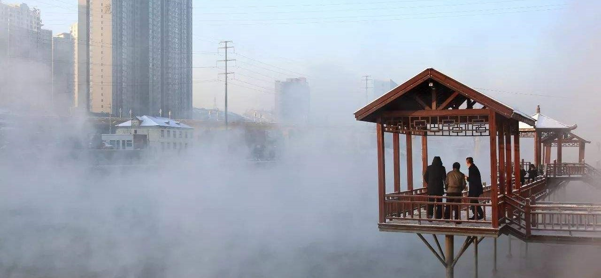
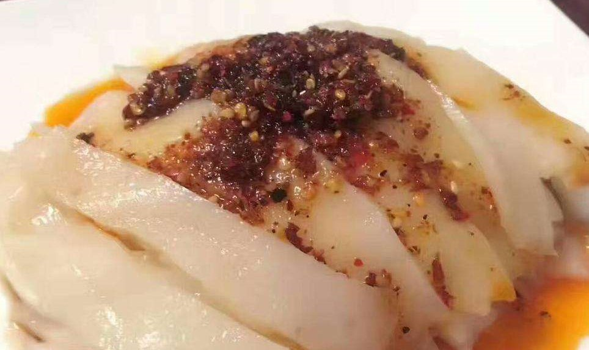
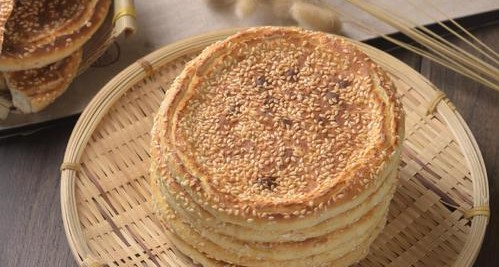

青岛理工大学（Qingdao University of Technology）是一所省属重点大学、卓越工程师教育培养计划高校、山东省重点建设的应用基础型人才培养特色名校， 入选国家“111计划”、全国“三全育人”综合改革试点单位、首批山东省一流学科建设高校，CDIO工程教育联盟成员单位。
学校始源1900年德国人卫礼贤创建的礼贤书院，办学于1931年礼贤中学开设的高级工程科，1952年12月发文筹建、1953年正式成立的“山东省青岛建筑工程学校”， 是山东省最早设立土木专业的学校。1953年6月由山东省划归中央人民政府重工业部领导。1960年6月升格为“山东冶金学院”，开始招收本科生。1978年更名为 “山东冶金工业学院”，恢复本科招生，隶属冶金工业部。1985年9月更名为“青岛建筑工程学院”。1993年被国务院学位委员会批准为硕士学位授予单位。1998年11月 划转山东省领导，实行“中央与地方共建，以地方管理为主”管理体制。2004年5月更名为“青岛理工大学”。2005年被国务院学位委员会批准为博士学位授予权单位。
柳林县位于山西省西部，吕梁山西麓，隶属于山西省吕梁市。东邻离石，西滨黄河，北接临县，南邻中阳、石楼，是黄河沿岸城市之一。柳林县总面积1287.29平方千米（2011年） ，辖15个乡（镇），257个行政村，人口32.76万人（2011年）。属暖温带大陆性气候，年平均气温10.5℃，年降水量472.3毫米，无霜期平均为199天。
柳林县城所在地柳林镇始兴于明，鼎盛于清，因商贾云集、物贸繁盛而享有“小北京”的美誉。
柳林碗团是山西省吕梁市柳林县的传统面食小吃，在陕西榆林、山西离石、中阳、平遥、保德等地都有，比较正宗的是陕北腕托和柳林腕托。柳林碗团也被称为碗脱或 碗秃或碗秃子。“碗团”之名的来源是因为它用小碗蒸，熟后晾凉，可从碗中脱下。在柳林方言中，“团”、“脱”、“秃”，音节相似，故有多名。但人们大多喜欢碗团这 个名字，用圆圆的碗蒸出圆圆的碗团，象征团团圆圆。
柳林红枣，山西省吕梁市柳林县特产，全国农产品地理标志。
山西柳林红枣长于黄河两岸，俗称“滩枣”，因生长在距黄河20米至1500米范围内的沙滩上而得名，其特点是颗粒硕大，呈圆柱形，色如墨玉，果肉甜软润香，素称“人参果”。
柳林红枣已有1300多年的历史，以品质好、产量高而闻名。柳林红枣产量高，是山西重要的红枣生产基地。全国最大的红枣交易市场也设在柳林。柳林红枣肉厚核小， 糖分大，色泽鲜，而且是红枣深加工的首选品种。
柳林芝麻饼是一种山西省柳林县地方特色小吃，是用上好白面，配以芝麻、酥油、碱面等上炉烘烤而成。芝麻饼香酥味美、口感筋道、酥脆可口，能够健胃消食， 尤其对慢性胃病患者有很好的保健作用。
